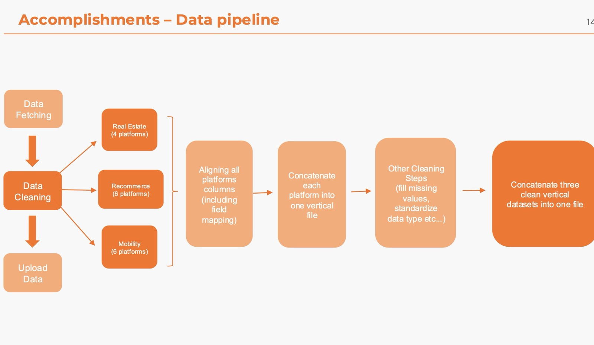
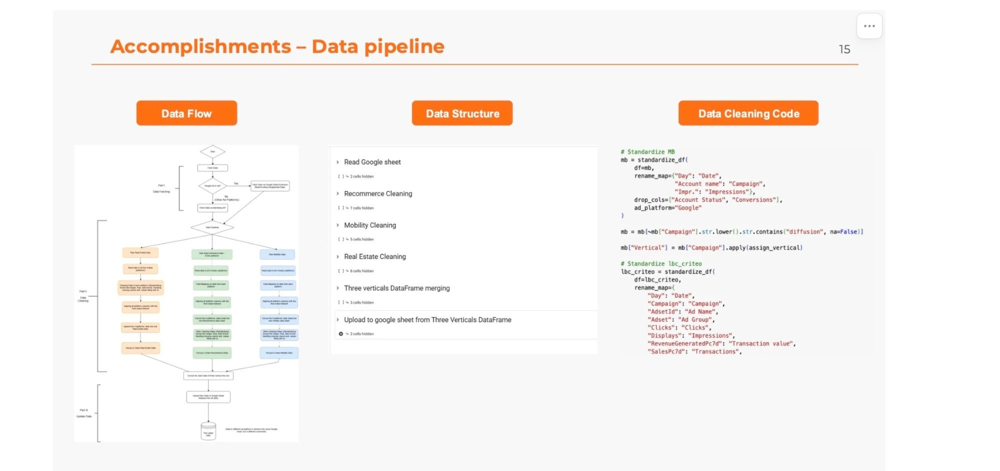
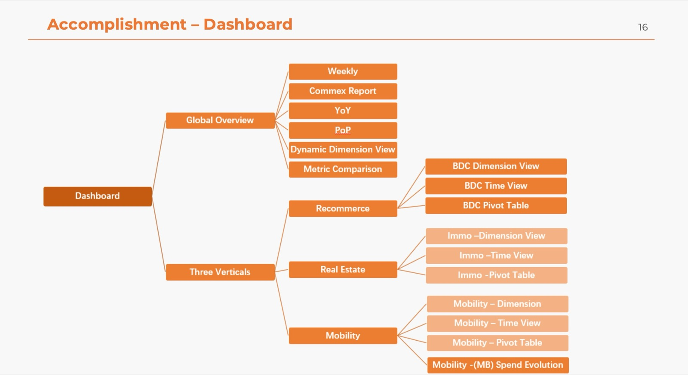

Sixteen ad platforms, one dashboard
An automated Python pipeline and a 17-page Looker Studio dashboard replacing scattered Google Sheets for the media team.
Read the case
The brief
Project overview
A three-month real-world project addressing Leboncoin's business needs, carried out by a team of five from EMLYON, running from April to June 2025, with a commitment of two days per week on-site collaboration with Leboncoin.
The task aims to achieve two key objectives
- Create data pipeline: build automated data pipelines and clean/transform large advertising datasets using Python (pandas/NumPy) to deliver accurate, business-ready data for reporting, dashboarding and strategic decision making.
- Data analysis and visualization: analyze and clean data to create an interactive dashboard using Looker Studio tailored to the needs of the Media department. Our project will provide Leboncoin with an automated data model that enhances data visualization and decision-making for their Media team in the future.
Step 1 · What we built: the data pipeline
Google Ads data came in through a Google Sheets extension and other platforms through their marketing APIs. Fields from 4 Real Estate, 6 Recommerce and 6 Mobility platforms were mapped, cleaned and joined in Python (pandas, NumPy) in Google Colab.
- Data fetching: advertising data pulled from every platform.
- Data cleaning, per vertical: Real Estate (4 platforms), Recommerce (6 platforms), Mobility (6 platforms).
- Align all platforms' columns, including field mapping
- Concatenate each platform into one vertical file
- Other cleaning steps: fill missing values, standardize data types
- Concatenate the three clean vertical datasets into one file
- Upload data: the unified dataset feeds the dashboard.

How it was built: the data flow from fetching to upload, the notebook structure (read Google Sheet, clean each vertical, merge the three verticals, upload back to Google Sheet), and the Python cleaning code that standardizes each platform's columns.

Step 2 · What we built: 17 dashboards
The dashboard covers Google Ads, Meta and Snapchat: a weekly report of cost, clicks, impressions, ROAS, CPC, CTR, CPM, AOV and conversion rate against the previous week, plus a monthly pivot, the COMMEX budget report and a year-on-year view.
One dashboard with a Global Overview (Weekly, COMMEX report, YoY, PoP, dynamic dimension view, metric comparison) and a page set for each of the three verticals: dimension view, time view and pivot table, plus spend evolution for Mobility.

Result
Project management and outcomes
Held bi-weekly meetings with the company. Demonstrated strong project management and communication skills to effectively collaborate with Leboncoin and meet requirements. The data pipelines and dashboards we developed are still being used by their Marketing Department.
Skills required
- Data management: data cleaning, data processing, and data visualization.
- Technical expertise: Python, Google BI tool - Looker Studio, Advanced Excel.
What we learned
Our key takeaways
- User-centered and friendly design is key
- Interactivity boosts adoption
- Visual clutter reduces usability: prioritize clarity over comprehensiveness
- Stakeholder KPIs ≠ technical KPIs
- Ask 'why' behind every metric request
- Visual storytelling helps explain technical constraints
- Don't just ask "what data do you want to see?": ask "what decision is this data supposed to support?"
- A good data model reflects a deep understanding of the business
- Effective dashboards answer three questions: What's happening? Why is it happening? What should we do?
- We moved from being data deliverers to becoming business translators.